キメ顔は、国芳 [梅吉]
マタタビキャンディーをぺろぺろする梅吉さん。
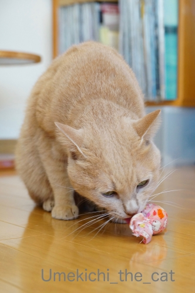
顔が国芳の猫（妖怪っぽい）みたいになってます。
（国芳の猫って？の方はこちら）
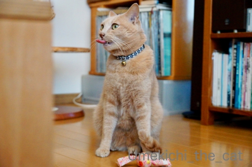
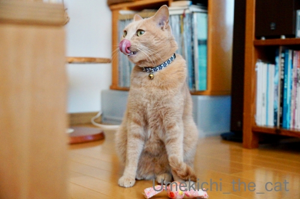
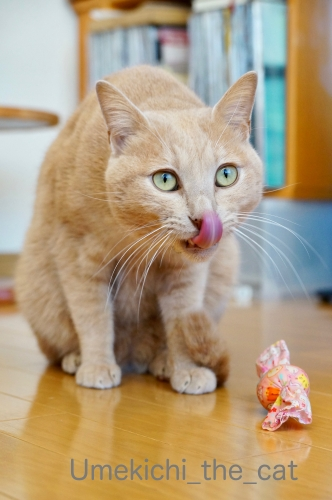
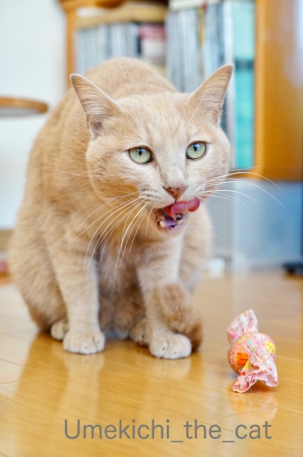
ながーく出る舌も妖怪っぽくw
ペロッと舌を出すのはペコちゃん始めキュートさの象徴みたいなものだと思うのですが・・・
梅吉らしい目つきの悪さで（Chatbleuさん談w 飼い主も100パーセント同意(*>艸<)
すごく国芳的です0(≧▽≦)0
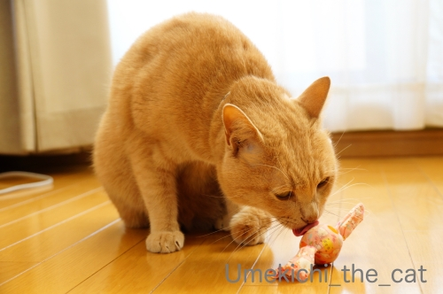
別の日のぺろぺろも
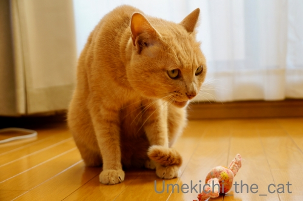
やっぱり最後は国芳的キメ顔なのでした。
真剣な時、楽しい時は怖い顔 or 妖怪顔している事が多い梅吉です。
もちろん飼い主はこの妖怪顔が大好物ですけど( ´艸｀)
逆に可愛い顔するのは悪いこと、やましいことをしている時！
見えないところでゴソゴソしているので様子を見に行くと
「きゅるるん！」とした目で見返してきますwww
にゃんこも「やましい」感情があるんだ、と思う瞬間。
 ↑ガブッと一押し↑
↑ガブッと一押し↑
先日話題にした「とん蝶」
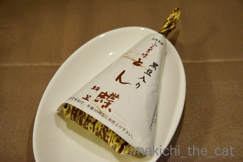
平日昼ごろ、お店の近くに行く用事があるというのでおっとに買ってきてもらいました！
やったー！！黒豆バージョン＾＾
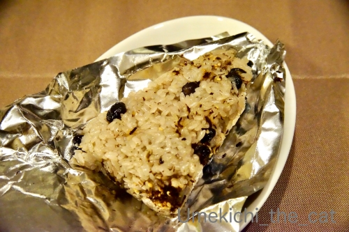
期待通りの美味しさでした。
好物が近くで買えるって嬉しい！！
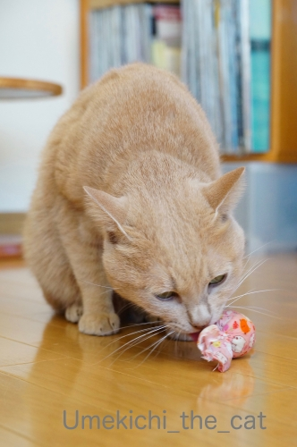
顔が国芳の猫（妖怪っぽい）みたいになってます。
（国芳の猫って？の方はこちら）
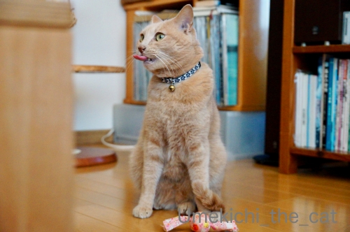
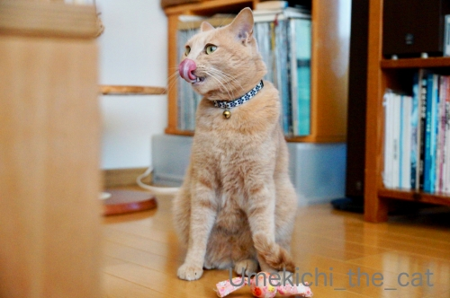
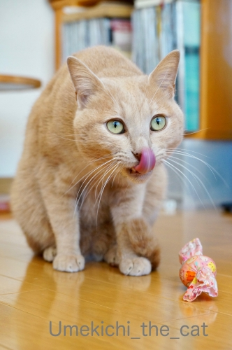
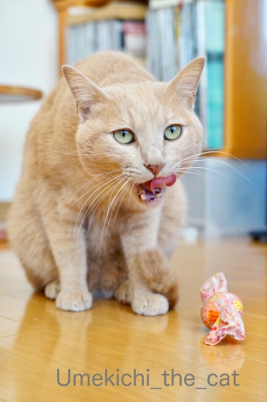
ながーく出る舌も妖怪っぽくw
ペロッと舌を出すのはペコちゃん始めキュートさの象徴みたいなものだと思うのですが・・・
梅吉らしい目つきの悪さで（Chatbleuさん談w 飼い主も100パーセント同意(*>艸<)
すごく国芳的です0(≧▽≦)0
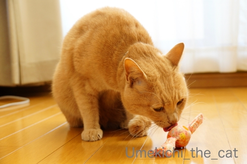
別の日のぺろぺろも
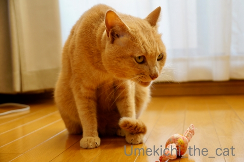
やっぱり最後は国芳的キメ顔なのでした。
真剣な時、楽しい時は怖い顔 or 妖怪顔している事が多い梅吉です。
もちろん飼い主はこの妖怪顔が大好物ですけど( ´艸｀)
逆に可愛い顔するのは悪いこと、やましいことをしている時！
見えないところでゴソゴソしているので様子を見に行くと
「きゅるるん！」とした目で見返してきますwww
にゃんこも「やましい」感情があるんだ、と思う瞬間。
先日話題にした「とん蝶」
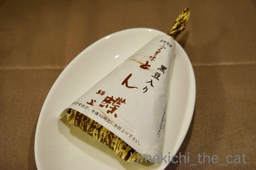
平日昼ごろ、お店の近くに行く用事があるというのでおっとに買ってきてもらいました！
やったー！！黒豆バージョン＾＾
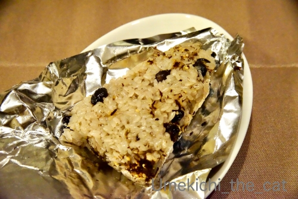
期待通りの美味しさでした。
好物が近くで買えるって嬉しい！！

カフェオレ色の梅吉

梅吉 2023年8月10日 永眠


梅吉と出会った譲渡会

犬猫の理由なき殺処分ゼロ
妄想広告
UMEKICHI 光

爆発的に早い！
時々攻撃的！
Thanks to Mr.Boss365
爆発的に早い！
時々攻撃的！
Thanks to Mr.Boss365

妖怪顔の猫さんは可愛いですよ。梅吉さんには和風の佇まいがありますしね。
見るからに可愛らしい顔の猫が好きなのは初心者ですっ。(何の!?)
by zombiekong (2019-12-05 01:16)
マタタビキャンディーまいう～？
猫も浮世絵に描かれてるんだね。
by 英ちゃん (2019-12-05 02:28)
国芳さんはニャンが大好きで細かく観察してたのかもしれませんね＾＾
by ぽちの輔 (2019-12-05 06:38)
マタタビキャンディーに無我夢中ですね^^
by ニコニコファイト (2019-12-05 06:49)
お猫様はどんな表情をしてても可愛いのですが、
さすが梅吉さん、国芳的キメ顔を披露されるとは
イケメンさんならではですねぇ( ^ω^ )
うちの大御所はどうしても隠しきれないほけほけオーラがw
やましいことをしてる時は可愛い顔w
うちのニャンズはいたずらしてる時に覗くと
私が相手の場合は「何？」と平気な顔してますが
かみさんが覗くと「いたずらなんかしてないよ。とっても良い子だよ」と
かみさんの足にすりすりアピールします(⌒-⌒; )
by ニッキー (2019-12-05 07:13)
マタタビは猫まっしぐらの威力がありますからね。
梅吉さん、期待を裏切りませんね(^^)
by kou (2019-12-05 07:36)
マタタビって、そこまでニャンコを惹きつけるんですねー。
なかなか不思議ー！
近所で好きなもの。大船の「餃子の王将」(￣∇￣)
by よーちゃん (2019-12-05 08:48)
黒豆のおこわ、食べた事ないです！
安定の味なのですね。
by ma2ma2 (2019-12-05 09:16)
こんにちは！
とん蝶、私も大好きです。
黒豆入りのとん蝶があるなんて！
近いうちにチェックに行ってみます。
by あとりえＳＡＫＡＮＡ (2019-12-05 09:19)
梅吉さん！ペロリ！可愛過ぎますぅ～(#^.^#)
悪いことしている時は可愛いお顔（笑
怒れませんね！
by きぃ (2019-12-05 09:58)
あらためて歌川国芳の浮世絵猫を見ながら梅吉さんを見ると
確かに通じるものはありますねｗ(^^
お昼まで黒目が線状になっているのも妖怪風味が増している点かもｗ
梅吉さんの舌長いですね。くるっとまかずにまっすぐ伸びた感じが
最も妖怪度が高いと思われます。
黒豆おこわおいしかったですか(^^ 昨夜はどうしてもほっけが食べたくて
スーパーをはしごしてしまいました。なかなか北海道のほっけが売ってないです。アメリカ産のバカでかいほっけがありましたがやめました。
好きなものが近くで安定的に供給されることは幸せですよね。
by marimo (2019-12-05 10:55)
こんにちは。
梅吉さん「国芳の猫」より、ずーと可愛いですね。
ペロンチョ良い感じで撮影！！鼻が乾いている可能性あり？（笑）
ニャンズ、人間の言葉を理解？しているので、人間的な感情があると思います。
ボスママと言い争っている時は・・・
「やましい」の表情しています。危険水域になると近寄り間に入ってきて停戦かな？
「とん蝶」美味しさ連発なので食べてみたいですが・・・
「通販なし」が残念です！？(=^･ｪ･^=)
by Boss365 (2019-12-05 12:13)
猫の舌って器用ですよね！
べろ～んと長かったり、ハーと形に見えたり、上下左右に動き放題♪
梅吉さんは「和」の空気があるから国芳っぽいのかもしれません^^
そうそう、いたずら見つかった時やおねだり顔は「きゅるるん♪」ですよね(#^^#)
美味しい顔や気持ちいい顔は、ウチのは目を細めたおじいちゃんみたいです( ;∀;)
お～っお～っ、黒豆のとん蝶だ！！
実はまだ食したことが無いのです・・・。
先日も仕事帰りにお店に寄ったのですが、ノーマルバージョンしかありませんでした。やっぱりお昼過ぎには行かないと無理そうですよね^^;
by ゆきち (2019-12-05 12:18)
国芳師匠の描かれるニャン大好き❤
梅ちゃんはお目目がタレ気味でやさしいから
そんなワルワルなお顔になりませんよぉぉ
うちはつり目なのでワルワルです(((*≧艸≦)ﾌﾟﾌﾟｯ
このまたたびキャンディかわいいですよね♪
確かにやましい時は、てへって感じで見返して
きますよねｗダメとわかっていてもやめられないという(笑)
by カトリーヌ (2019-12-05 17:31)
ありゃ、悪口が採用されてしまった(笑)
その妖怪顔が良いってことで(^^;)
妖怪さんって、目つき悪いって言えば悪いけど、意地の悪い感じじゃなくてなんとも独特な雰囲気ありますよね。そこが梅吉さんらしいということで。
あー、全然フォローになってないかーーー？！
by ChatBleu (2019-12-05 21:26)
国芳の猫も魅力的ですが、梅吉さんのペロリン妖怪顔も魅力的。^^)
明るいところにいると瞳が細くなって妖怪顔にみえるときもありますが、逆に暗い場所では瞳が丸くなっておねだり顔になったり、ニャンコの表情は幅がありますね。^^)
by yes_hama (2019-12-05 22:08)
またたびキャンディーなんてあるんですね
うちのコにもさがしてみようか・・・
子どもにはまだ早い？
by 藤並 香衣 (2019-12-06 00:31)
マタタビキャンディーはまだ包装中なのにスゴイ威力！
あっ、これって開けないタイプなのか・・・
妖怪顔からの猫ってやっぱり猫背なんだなとあらためて思いました(笑)
「やましい」お顔も見てみたい♪
そして黒豆が食べごたえありそうな「とん蝶」美味しそう＼(^o^)／
by yamatonosuke (2019-12-06 01:31)
やっぱり猫はワル顔＆妖怪顔が最高なのですよ。
にまにましちゃう^^
梅吉くんのワル顔は、まだまだ可愛いぞ！
これからも磨きを掛けてりっぱな妖怪顔をしてね！^^
あおなんて、うみをいじめようとしたのに
しらばっくれて、イケニャン顔決め込んでるからねえ(笑)
by リュカ (2019-12-06 09:42)
梅吉さん、ぺろり顔、可愛い～！
国芳っぽいですよね、目鼻立ち、体つきも＾＾
やましいときはキュルン顔？知性を感じますね＾＾
おいたしたあとのすまし顔ってあったなぁ～
転げ落ちたときの、何もなかったような顔とかね＾＾
by sana (2019-12-06 18:50)
梅吉君のぺろり顔(≧▽≦)
猫の舌ってそこだけで単独の生き物の様ですよね(*^-^*)
by palpal (2019-12-07 09:45)
にゃるほど、国芳の猫！ またたびでスイッチ入るんですね。
「とん蝶」食べ損ねてしまいました…、来年の課題にしますっ！
by liang (2019-12-07 12:45)